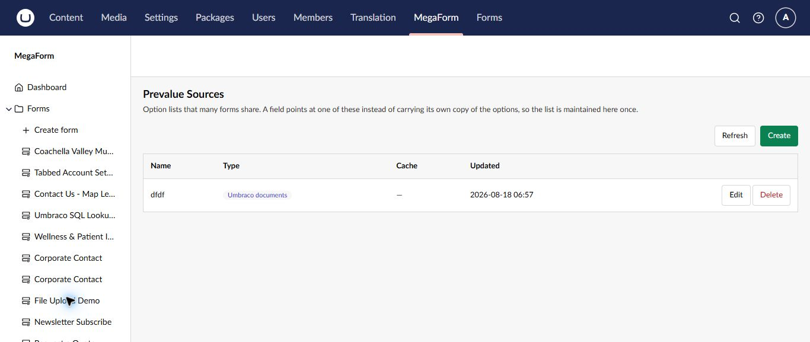
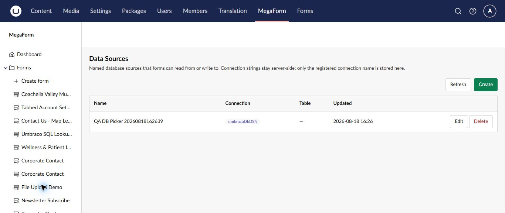

Reuse option lists and data sources on Umbraco
MegaForm separates reusable choices from database connectivity. Prevalue Sources maintain option lists shared by fields, while Data Sources register named server-side database sources.
Prevalue Sources
Use a prevalue source when several forms should share the same countries, departments, products, content items, or other choices.

- Select MegaForm → Prevalue Sources.
- Select Create.
- Name the source and choose its type.
- Configure and save the source.
- Open a choice field in the builder and select the saved source.
Updating the source maintains the list in one place instead of copying options into every form. Test existing forms after a change, particularly when an option value is renamed or removed.
Data Sources
Data Sources are named database connections that forms and workflows can read from or write to.

- Select MegaForm → Data Sources.
- Select Create.
- Choose a registered server-side connection and provide a clear reusable name.
- Select the allowed table or data target when applicable.
- Save and test the source before using it in a form.
Connection strings stay on the server; MegaForm stores and displays the registered connection name. Keep credentials out of form definitions, field labels, prompts, and documentation.
Good practice
- Use least-privilege database accounts.
- Prefer read-only access for lookup lists.
- Give every source an owner and purpose.
- Test with non-production data first.
- Review forms before deleting or renaming a shared source.
- Limit write access to the tables and operations the workflow requires.
Important
A data source can affect multiple forms. Coordinate changes with form owners and verify all dependent forms after editing it.